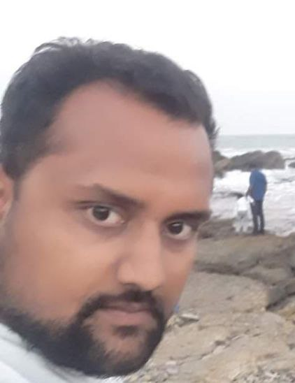
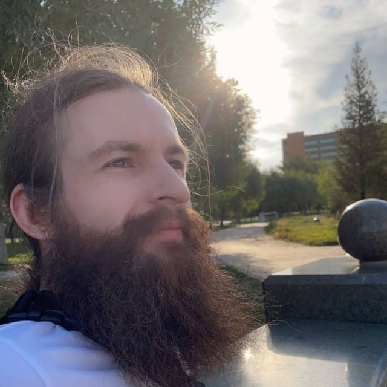

Nishchal can be known further from - nishchal.preseed.in
REACTOR
CORE

Nishchal Kesarwani
(Founder & Director)

(Founder & Director)
A group of people one chases a common goal with. Nishchal's or Preseed's goal is further fragmented into a prfound topic, each. Nishchal interfaces with one person per topic. Each topic is a startup. Nishchal’s further teams are spread over the teams of his respective startups. Those teams can’t be found here on this page for this page is strictly dedicated to the team of Preseed, but you can likely find them on the team pages of his other startups. Here you will find just one person who is the point of contact of Nishchal for that startup. This is how Nishchal has designed the method to his madness.
Nishchal's professional summary before Preseed
Below are photos from Nishchal's various talks that had moved and shaken some humans
and
ideas,
into
newer shapes and forms.

Nishchal is not a conventionally educated man. He dropped out of college. However, he is a learned and observant man, but most importantly, he is a meditative man. He learned his early entrepreneurial lessons by leading a team of extraordinary men and women while he was only 23. To know who were the people he led in his first company FloEco India Pvt. Ltd., and what they went on to become, click on their names to know these stars — Parag Arora(YC), Siddharth Khattri(Google & Techstars), Neha Kesarwani (cofounder www.vertoe.com), Kabeer Jain, Siddharth Yadav, Vinay Yadav, Puneet Bharti, Akshay Gupta, Mustafa Shahansha, Puneet Bharti, Varun Rajput, Atul Agarwal, Radhika Kapoor and Jatin Agarwal. This was his first team, and he was their first captain. He has a knack for identifying talent before it reaches the rest of the world. It may have been painful to have lost that team, and starting from scratch, from that rock bottom. This situation must have had something to do with Nishchal's new found raised bar at Preseed.

Somewhere along the way, Nishchal got offers from companies like 91 Springboard and Embibe, by their charismatic founders to join them as a co-founder and director. He had to politely turned those offers by these game-changing men and women. Nishchal was to be on a mission of his own. Something only he may be destined to do. Today those businesses are at over 200 million dollars in valuation, while Nishchal is building a Chinese bamboo. It is deeper below the ground than above it.

To say the least, his constant advice will help you understand your business ahead from some new standpoints, perhaps, over a noticeable period of time. He will prepare you for your investment/incubation readiness. The slide deck you will make together will help you raise investment. However, that is the least of the reasons he will help you in the making of a right Slide Deck. What is the most important reason he will do this exercise for? This is the process with which he will reveal your company to you with some new standpoints. His questions to you, and your understanding thereafter can make all the difference.

Over the years his $100,000 backed startup failure with the above-mentioned star-studded team in 2010 at his ripe age of 25, to starting Preseed as a community in 2012, up to now, Jan 2014, he often finds himself and his team advising a lot of business owners and friends, who have come to us seeking his advice on new ways to do business in the new, ever changing age of free information and free tools.
However, he has been so caught up until now in building from the ground up, upon his own ideas listed at Preseeded and that he never formally got the time to start our consulting for such businesses and startup friends out there, even though in his personal capacity, in the past, he has advised and executed for companies like —
1. Libra Mattresses (among the top 5 mattress manufacturers in India) - Nishchal aided them in 2009–10 in improving their brand and design. They give his team's designs the credit for making one of their foam product their best seller.
2. Jeet India Limited (a SME in food and beverage) — In 2009–10 Nishchal with his team (that later placed in organizations like google and O&M) worked on their brand, their packaging, their ERP, their IT infrastructure etc.
3. Invest Care — In early 2011 Nishchal and his team deployed IT infrastructure solutions for them through his other co-founded startup called BizOnTech. (Note-: He dropped out of BizOnTech soon after to split from that team, to focus on something more inspiring, that now is called Preseed).
4. Om Sai Global — In the mean while to make ends meet Nishchal started advising Om Sai Global on harnessing the internet better and graduated to training their teams. Soon after he became the CEO there for a brief period of 3 months as that allowed him more authority to attempt some overhauling in their company. He did not continue thereafter for he was not motivated to serve real estate business.
5. Many more such business consulting stints happened till 2011 December, when he finally decided to not work as a consultant to SMEs anymore, to focus back on what mattered to him the most. What mattered to him the most was building Preseeded, which of course in those days around the mid of 2011 was just a thought in his mind, without a form. For Preseeded, Preseed had to happen first. So he started building Preseed.
His main interest of work always lied in building startups from bottom-up, for that leaves more room for some soulful innovation. He liked to innovate on even the way businesses are managed, let alone the product the business is building. His appetite for technology and good design transcends by far the appetite for technology and good designs in most businesses in India. (Although, ironically, in spite of having the skills and sensibilities, he is unable to devote time to improve designs on his own website :p).
His biggest challenge in consulting SMEs was that they often lacked the creative work force needed to execute what my advise may have contained for them. Hence, it was a fair decision by all regard to stop advising others to focus back on starting up a business that fulfilled his desire to co-build important things that mattered. So, if you are building something important, that leads people to experience greater freedom in his perspective, count him in.

A hand full of action oriented, extraordinary humans that I can make great timely impacts with the help of, through the collective of their startups and our mind.
Thes are some of the projects Nishchal advised or connected, often for no benefits. Just out of his love for entrepreneurs:
1. GameXS.in — Helped them raise their seed investment in 2014–15.
2. Ebikego — Nishchal advised them and made way to have them get a consultant who eventually was hired into their management team.
3. Zipgo — Nishchal connected two entrepreneurs Jitendra and Pritesh for he felt they were headed for a common goal. After a few years, they cofounded ZipGo and ended up raising $55 million together.
4. 91springboard — Connected the cofounder of 91 Springboard, Varun Chawala with someone whose company Varun acquired for his father’s travel business.
5. Co-living and homestays — Spent ample time exploring accommodation industry with a friend Minakshi as a potential partner. Nishchal and Ritesh Agarwal, founder, OYO once lectured together about the entrepreneurship and the accommodation industry in India.
6. LawClik — A firm we are looking to lay our mind and connection to, to make a dent in the legal industry with. The founder is a friend who often collaborates with Nishchal over their legal industry tech thought.
7. eduSquare — I am involved with them as a friend over matters of their growth. Soon we will translate this friendship into a business handshake.
8. www.IVAT.Com — I have been offered to join them as a co-founder. This deal is under negotiation
9. Delhi Furniture Company
10. DIY Guru — An education company that can lead Indian students into contemporary education about mobility. Nishchal is looking to find an investor for them.
11. Potbelly — Its an award-wining restaurant chain of regional food, and it is winning. Nishchal helped them hands on during the first few months of Potbell’s start.
Nishchal's few other attributes we love
Nishchal is here to sincerely help change your status quo, to ensure that you get at least one shot to do something impactfully different. His attributes are as different as the result he wants to create, even culturally. Some of those attributes of his we love while some others find amusing:
1) He rides bicycles and shows up for most ings(and parties) in shorts and t-shirts, needless to say, sweaty and muddy. He doesn’t care about what he is wearing and he also doesn’t care about what you are wearing.
2) He has huge concerns over effective visual communications, especially if you are designing to communicate with your customers for customers won't get into long verbose conversations with you. He feels if you invest on communications right, it would really facilitate his task of ‘GROWING THE COMPANY’. If you are an alive company with some real on the ground traction, sometimes, the first job he may want to get done for you is getting this aspect of your business right. We hope we will find you prepared to invest time and money on this.
Note -: Good designs seek good payments. If you are not willing to pay the graphic designers well, we won’t take the responsibility of your visual communications. Actually this stands true for any vendor services.
3) He may get really really profound and verbose at times, almost on a whim, but that's because he has a very liberated sense of possibilities, passion backed with logics that may take you time to comprehend just like most groundbreaking logics in physics may take time to comprehend.
4) He is even further north of the optimistic side, from other people’s perspectives (especially those who are still found conducting business in traditional ways*). HE IS REALLY REALLY DREAMY, YET SIMPLE.
5) He never thinks not backed by an investor is a problem or a big deal, so you also please stop assuming that it is. It definitely is a means to an end, no doubt, but not having it should not mean you stop the hustle. Be creative in even how you make your ends meet. Where there is a will there is a way. Look carefully at how he is trying to do the same for himself.
Traditional ways :-
A) Poor visual communication.
B) Without harnessing the internet.
C) Unclearly defined roles and responsibilities of the staff.
D) Uninspired management apart from the co-owners.
E) No Business plan.
F) Ineffective or delegation of tasks.
G) Unoptimized resource including the available human resource.
H) Little or no funding.
I) Disbelief and bad payments against exceptional quality.
At PRESEED YOGA these are also some of the aspects we work on.
5) He never thinks money is a problem or a big deal, so you also please stop assuming that it is. It definitely is a means to an end, no doubt, but not having it should not mean you stop the hustle.
6) He will say a point once and in most cases, it would be communicated to you in written words. We already assume that you are inspired enough to take action on the point he has stated. So, don’t expect us to send reminders or follow up till you yourself write to us telling us the status of whatever the point of concern was. He hates to repeat. It's not an ego thing. It's the ‘duplication of the same effort’ that he is against. It is the same as inefficiency.
7) Twitter is one of the best ways to get in touch with him. He prefer it over emails and phone calls.
8) We hate to see his time getting wasted with you. You are not the only business/idea/goal/dream he is dealing with. So, please value his time. Value your time too. If you save him time, he will most certainly make this world a better place.
9) He is critical(but not over critical) and brutally honest. In fact so much that sometimes we lose people for they get offended. But, that helps us in filtering bozos. We just hope you are not one of them who we lose.
10) If you are not being creative and liberal, we are not interested in you.
At PRESEED YOGA these are also some of the aspects we work on.

Nirbhay Pherwani
(Chief Technology officer)
Nirbhay monitors the tech that backs our startups
Know More
An individual with a strong background in Computer Science and experience in Data Analytics and Machine Learning.
Also, a Full Stack Developer with experience in working with Python, Java, Kotlin, Flask, Node.js, React.js, Angular and NoSql databases like Redis and Mongo, relational databases like MySql and OracleDB.
(Chief Technology officer)
Nirbhay monitors the tech that backs our startups
Know More
An individual with a strong background in Computer Science and experience in Data Analytics and Machine Learning.
Also, a Full Stack Developer with experience in working with Python, Java, Kotlin, Flask, Node.js, React.js, Angular and NoSql databases like Redis and Mongo, relational databases like MySql and OracleDB.

Aaroh Srivastava
Chief Scientist
Research and development upon electromagnetic fields and time. You can know aabout Aaroh's works through his Clock and wrist watches manufacturing startup.
Chief Scientist
Research and development upon electromagnetic fields and time. You can know aabout Aaroh's works through his Clock and wrist watches manufacturing startup.

Steve Rodionov
(Chief Information Officer)
Research and development for startups since 1999. Complete full cycle software projects in retail, game development, digital education, architecture visualization, computer animation, preventive medicine, telemetry, mesh networking and knowledge engineering.
(Chief Information Officer)
Research and development for startups since 1999. Complete full cycle software projects in retail, game development, digital education, architecture visualization, computer animation, preventive medicine, telemetry, mesh networking and knowledge engineering.